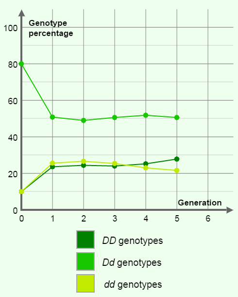

-
Question
If homogenous genotypes are 10% each, what would be the dominant genotype after a given number of generations?
-
Hypothesis
If the homogenous genotypes are 10% each, the heterogenous genotype will remain dominant.
-
Experiment
-Manipulated variable/Independent variable: DD values and dd values (in percentages). -Responding variable/ Dependent variable: Dd values (in percentage).
-
Data
Generation 0 1 2 3 4 5 % of D alleles 50 49 48.9 49.3 51.1 53.1 % of d alleles 50 51 51.1 50.7 48.9 46.9 % of DD alleles 10 23.6 24.4 24 25.2 27.8 % of Dd alleles 80 50.8 49 50.6 51.8 50.6 % of dd alleles 10 25.6 26.6 25.4 23.6 21.6 -
Conclusion
The sum of DD and dd percentages almost equals the total percentage of the heterogenous genotype, Dd. Therefore, the hypothesis was not supported by the data of the experiment.